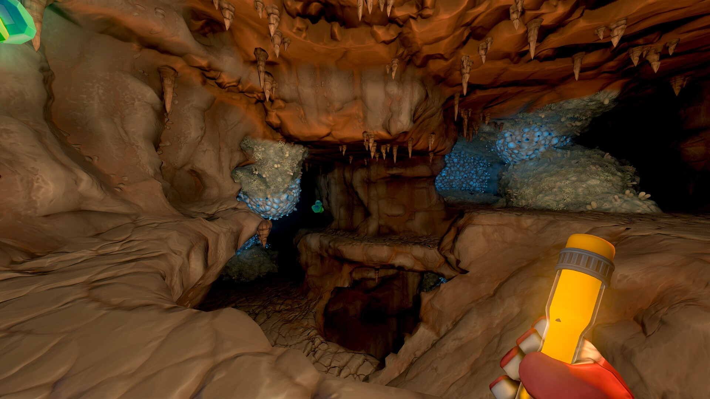

Summary
Scrap Mechanic is a multiplayer sandbox survival game, with emphasis on crafting and combat.
Player freedom and autonomy are some of the core principles that dictate how we take on designing and creating elements for the game. More than one approach, and rewarding creativity are the tenets that we live with.
This creates the basic parameters that shape the start of every level and encounter.
Contribution
-
Level and World Design:
- I've iterated and designed a general view of the world, pacing player progress as they move through larger areas and lay out key locations they find.
- My level work focuses on interior levels, like dungeons, some points of interest, and areas where the player will find a combat encounter.
- General art pass (lights, props, decals) so the environment artist can focus on more granular aspects of it.
-
Combat Design:
- Balancing enemies, from tweaking values like TTK to designing general behaviours, always looking to keep the design pillars in so we don't stray from the original vision.
- In charge of reworking the "Player Base Raids," where the player's farm gets attacked by waves of enemies.
- A technical challenge, since it was my first time working with LUA, and I had to redesign a game system.
-
Technical:
- Axolot's in-house game engine is very special; I work mostly with LUA to shape and create gameplay ingredients.
- For other art-oriented tasks, I work directly editing JSON files or use some of the custom-made tools that the engine programmers create with our input.
-
Communication:
- Team communication is a big percentage of my work; I've handled playtests, presentations, and documentation that ultimately help achieve the best outcome for an experience.
- For playtests, I create a structured guide on the things we're mainly looking to receive feedback on, while leaving space for new finds or feedback on other areas.
- I compile the results of the playtest and expose the most common points, creating a solid structure to iterate on the design.
Gallery


Highlights
Specific systems and features I was most involved in:
- Growlabs Owner — Took ownership of Growlabs after inheriting old mock-ups and early prototypes of the area, then designed and oversaw its art implementation and changes going forward.
- Underground Stations Owner — Much like Growlabs, took ownership of this area, deciding to keep or iterate on old mock-ups and early prototypes, with the new approach leaning more combat-oriented.
- Underground World — Involved in early iterations of the world's shape and the player's path through it, working within technical limitations and time constraints while sticking to our design pillars.
- Scrap City — Took ownership of the area and overhauled it to make it feel like a city while adding gameplay, secrets, building opportunities, and quest implementation.
- Farm Raids — Reworked and implemented the foundation of the new raid system, balancing and pacing enemy numbers against the player's base to match each difficulty level.
More Footage
Credits
Thank you Kaj, Max, Adrian, Jack, Isak, Marcus, Markus, Mille, Lovisa, Collin, William, Kim, Lucas, Pontus, and Kacper.
For more information or a deeper dive into how I approached creating these spaces, please contact me! I keep a lot of information on the process, and I would certainly love to talk about it.